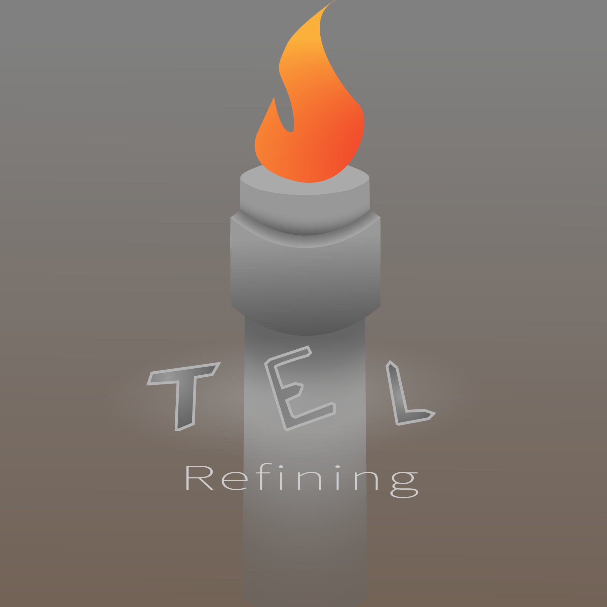
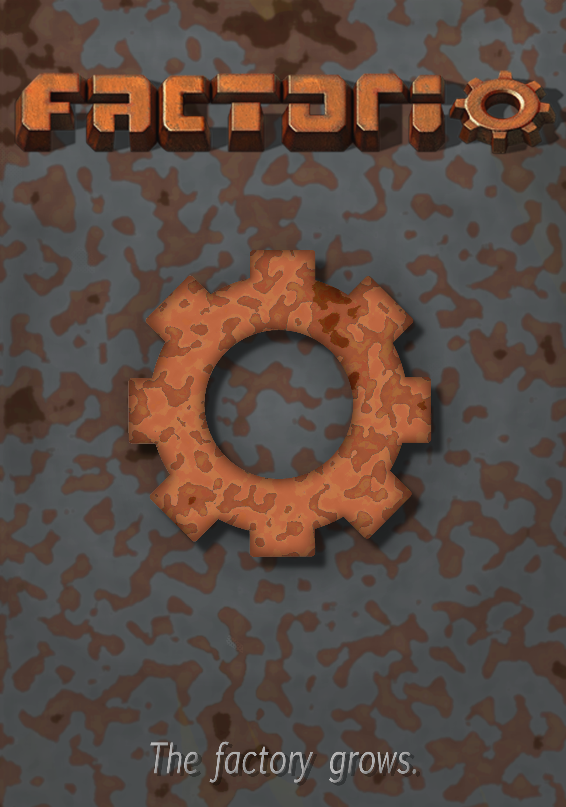

A Place
on the internet
Sorry for the strange image aspects. Not sure how to change that.
Portfolio
As it turns out, I can draw. Not well, mind you, but I can. This page is intended to show what I, on some occasions, make. This is only for my graphics design class at the moment, but that could change. Cool, right? No? Okay, whatever, you do you.
Minimalist Logos.
Insperation
I just learned how to use Adobe Illiustrator. it uses vector graphics instead of Raster, Which is new to me. I shoved a bunch of hexagons together and messed about, and I suddenly had a logo. My other Flag logo was made mostly because I thought it was cool. I also made a face, which is in my usual stickman style.
Reflection
I am generally happy with how my artwork turned out. My attempt at a cartoon face failed desperately. I was still unsure how to use illustrator, but it may have been the concept that failed. My other designs, however, I am far more proud of, most so is my hexagon design. It is what I put, by far, the most work into. My flag design is also decent. I learned a lot about illustrator during this process.


Monograms
Experiments with text and letters and whatnot.
Inspiration
I was told To create Designs with letters. I first had to figure out what letters to use. I first Picked my own and the ones of the preson beside me, then I picked in a some what random fashion the letters T, E, and L. AAfter some sketching, I was able to find good and uniqe ways to desplay All of theese, MH in a jagged fashion, LH in a cursive manner, and Tel in a more bubbly Text.
Reflection
I am happy with how all of these turned out. Most of all though, is the Tel logo. I was playing with the gradiaent and found this most interesting.


Buissness Cards
Using the mongrams to an effect. Not a great one, but whatever.
Inspiration
The class was told to create buissness cards. I used my logos from earlier and slaped text on, more or less.
Reflection
I feel that I could have put more effort into these, but they seem presntable enough. My last one I tried to experiment with angle, and it wasn't to poor.


Logo
A culmination of illustrator skills.
Inspiration
This logo was born from the buissness card project as an extension of TEL petrochemicals, TEL Refining. The idea was to have a flare stack with TEL printed on or around it. Oil effects could've helped.
Reflection
The duedate snuck up on me for this one. I feel that this logo was a poor one, and it looks ugly. I probably should have made it flat insteadof this poorly made 3D.
Flyers
Get the word out, in a graphical way.
Inspiration
I recently made a game. You can see it Here, but that doens't matter much. I wanted to make a flyer for it, as I wanted more people to know about it. I probably wouldn't have made it without this class, but I think it was a good idea.
Reflection
I think I did well on this project. Things might be a bit cluttered, and the gold everywhere may look a bit strange, but over all, I think the flyer looks good.

Social Issue project
If I ought to be outraged, let's make it something petty.
Inspiration
Our class was told to think of a social issue, and I wanted an esoteric and rather bland issue. I picked pennies. After all, I couldn't think anyone would lose a tear if pennies were here or not.
Reflection
This project went well-ish. Could've been better. Currently, the poster feels disjointed and awkward. Perhaps with an introducory blurb, this could be resolved? I'm not sure, but at least the graphics are nice.

Final Project
It can be nearly anything, if you can make it.
Inspiration
Our class was told to make any movie, album, or game related artwork. I choose my favorite game, Factorio, in which you manage the logistics of your factory.
Reflection
This project went well enough. I feel the rust background could've been tweaked slightly, and the copper/rust of the gear was a bit to dark some spots and too well-defined. overall, it looks a bit 'meh'.
Fusion/magazine cover
We have gained the knowledge to warp reality! It wasn't that hard, really.
Inspiration
Our class was told to fuse two animals. This reminded me of a xkcd where fruit are colided.
Reflection
I think I did well on this project. Other than it looking somewhat phalic in nature, the fuision looks fairly natural.

Currency Project
Money, but different!
Inspiration
Reflection

Menu Project
food, but different!
Inspiration
Reflection
CLICK HEREEarth Project
enviroment, but different!